3 samoobslužné
mycí boxy
Kombinace různých mycích programů podle stupně znečištění vozu. Speciální program na mytí disků kol.

O nás
Společnost F.X. CarWash s.r.o. byla založena v roce 2025, samotná cesta k mycímu centru ale začala už v roce 2023. Od začátku jsme měli jasnou představu: nabídnout zákazníkům vysokou kvalitu mytí, moderní technologie, příjemné prostředí, a především spolehlivou službu, dostupnou kdykoli.
Velkou pozornost jsme proto věnovali výběru technologického partnera. Hledali jsme společnost, která nám pomůže vybudovat nejen moderní mycí centrum, ale zároveň dokáže zajistit prvotřídní technologickou podporu a servis během jeho každodenního provozu.
Po dlouhém výběru jsme navázali spolupráci se společností My Wash Technology s.r.o., která má s realizací bezkontaktních mycích center dlouholeté zkušenosti. Použité technologie a kvalitní komponenty zajišťují vysokou účinnost jednotlivých mycích programů s důrazem na šetrnost k vozidlu, ekologický provoz, úsporu vody a maximální komfort zákazníků. To vše doplňuje moderní a nadčasový design celého mycího centra.
Naši samoobslužnou automyčku F.X. CarWash jsme otevřeli v Horní Bříze nedaleko Plzně — při silnici č. 27, a tedy snadno dostupnou i z Plzně, Třemošné a Kaznějova. Od zahájení provozu se neustále věnujeme ladění jednotlivých mycích programů, kvality používané chemie i celkového zázemí tak, abychom zákazníkům nabídli co nejlepší výsledek při každé návštěvě.
Naším cílem je budovat značku, která bude synonymem pro kvalitní bezkontaktní mytí, moderní prostředí a spolehlivý zákaznický servis.
Přijeďte se k nám podívat. Máme otevřeno 24/7.
Nabídka
Kombinace různých mycích programů podle stupně znečištění vozu. Speciální program na mytí disků kol.
Důkladné vysátí interiéru vozu kdykoliv během dne. Nonstop dostupné, bez rezervace.
Mycí centrum je otevřeno nepřetržitě, 24 hodin denně, 7 dní v týdnu. Umýt se můžete kdykoliv to potřebujete.
Šest důvodů, proč je bezkontaktní mytí to pravé pro Váš vůz.
Minimalizuje riziko poškrábání laku a je šetrné k povrchu vozidla.
Kombinace různých mycích programů podle stupně znečištění vozu. Speciální program na mytí disků kol.
Efektivní proces mytí, který šetří čas ve srovnání s tradičními mycími linkami.
Možnost umýt auto za nižší náklady.
Platební nebo předplacené karty pro pohodlné platby.
Mycí centrum je vybaveno měničkou peněz.
Programy na mytí
Pro dosažení nejlepšího výsledku doporučujeme postupovat podle jednotlivých mycích programů v uvedeném pořadí. Pro snadnou orientaci jsou programy na ovládacím panelu barevně rozlišeny.
Začněte důkladným očištěním kol. Speciální přípravek pomáhá odstranit brzdový prach a další odolné nečistoty z disků.
Použijte pistoli na disky – žlutá hadice.
Naneste aktivní pěnu rovnoměrně na celé vozidlo zdola nahoru a nechte ji přibližně 30 sekund působit. Aktivní pěna změkčí a uvolní nečistoty před hlavním mytím.
Použijte pistoli na pěnu – červená hadice.
Pomocí vysokého tlaku a horké vody s čisticím prostředkem důkladně umyjte celé vozidlo a odstraňte nečistoty uvolněné aktivní pěnou.
Použijte hlavní mycí pistoli – modrá hadice.
Čistou vodou důkladně opláchněte z vozidla zbytky čisticích prostředků a nečistot.
Použijte hlavní mycí pistoli – modrá hadice.
Nanesením horkého vosku vytvoříte na povrchu ochrannou vrstvu, která pomáhá chránit lak před vnějšími vlivy a zároveň podporuje jeho lesk.
Použijte hlavní mycí pistoli – modrá hadice.
Posledním krokem je oplach demineralizovanou vodou s přísadou pro lepší výsledek sušení. Díky tomu může vůz přirozeně uschnout bez nežádoucích skvrn a map po kapkách vody.
Použijte hlavní mycí pistoli – modrá hadice.
Firmy
Našim partnerům nabízíme možnost firemního mytí. Předplacené karty využijete jako benefit pro Vaše zaměstnance i jako netradiční dárek pro Vaše partnery.
Domluvit podmínkyPro individuální podmínky nás neváhejte kontaktovat.
F.X. karty
Po registraci nabízíme možnost objednání zvýhodněných předplacených karet, které můžete využít na služby našeho mycího centra.
Lze objednat novou kartu či opakovaně dobíjet stávající karty. V rámci věrnostního programu získáte od nás bonus v podobě kreditu navíc.
Chci F.X. kartuNovinky
Nový věrnostní program s předplacenými kartami. Objednejte si novou kartu nebo dobíjejte stávající a získejte bonus v podobě kreditu navíc.
Mycí centrum je provozováno nepřetržitě — 24 hodin denně, 7 dní v týdnu. Přijeďte se umýt kdykoliv to potřebujete.
Spolupracujeme se společností My Wash Technology. Kvalitní komponenty zajišťují vysokou účinnost umytí s důrazem na ekologii a úsporu vody.
Timeline
Od první stopy na papíře až po otevření v Horní Bříze — naše cesta krok za krokem. Děkujeme, že ji píšete společně s námi.
F.X. CarWash neustále posouváme dál. Nově nás lépe uvidíte díky reklamnímu banneru na silnici č. 27 ve směru od Kaznějova. Pro větší pohodlí jsme připravili venkovní posezení s výhledem na mycí centrum a celý areál doplnili o nové keře a rostliny. Zároveň se každý den staráme o čistotu areálu, kvalitu mycích programů a bezproblémový chod technologií, aby pro Vás byla každá návštěva příjemným zážitkem.
Přijeďte se k nám podívat, klobásy z grilu a nápoje zdarma pro všechny zákazníky do vyčerpání zásob. Rádi se s vámi setkáme osobně. Těšíme se na vás!
Již brzy pro vás spustíme možnost nakoupit si online zvýhodněné věrnostní fx karty.
Po týdnu zkušebního provozu máme otevřeno pro všechny zákazníky nonstop. Můžete u nás platit v hotovosti i platební kartou. Mycí centrum je vybaveno měničkou peněz. K dispozici je výkonný vysavač a možnost doplnění nemrznoucí směsi do ostřikovačů ( -20 °C).
Už finišujeme, ladíme poslední detaily a testujeme kvalitu mytí pro 100% spokojenost našich budoucích zákazníků. Předběžný termín otevření mycího centra je 17.12.2025.
Vše běží dle plánu a v prosinci 2025 bychom měli mít kompletně hotovo. Čeká nás dodávka samotné konstrukce mycího centra a její napojení na sítě. Finalizujeme také úpravy okolí, které bychom Vám rádi zpříjemnili. O termínu otevření Vás budeme brzy informovat.
Projekt výstavby mycího centra v Horní Bříze začal v průběhu roku 2024, kdy jsme se intenzivně věnovali výběru kvalitního a spolehlivého partnera pro realizaci výstavby. Tímto partnerem se pro nás stala společnost MY WASH Technology s.r.o. Stavební práce přímo na místě začaly v létě 2025 a již koncem srpna se podařilo dokončit a kompletně připravit základy. Už to pro Vás chystáme!
Kontakt
Naše cesta pokračuje setkáním s Vámi — stavte se umýt vůz, zavolejte, nebo nám nechte zprávu. Ozveme se co nejdříve.
Horní Bříza
K Černému mostu, 330 12
Horní Bříza
Najdete nás u čerpací stanice MOL Horní Bříza
Otevírací doba: nonstop 24/7
5,0 ★ · 3 recenze na Google Maps Trasa v Mapách ↗Horoměřice
Žižkova 1125, 252 62
Horoměřice
F.X. CarWash s.r.o.
IČO: 23579102 · DIČ: CZ23579102
Spojte se s námi